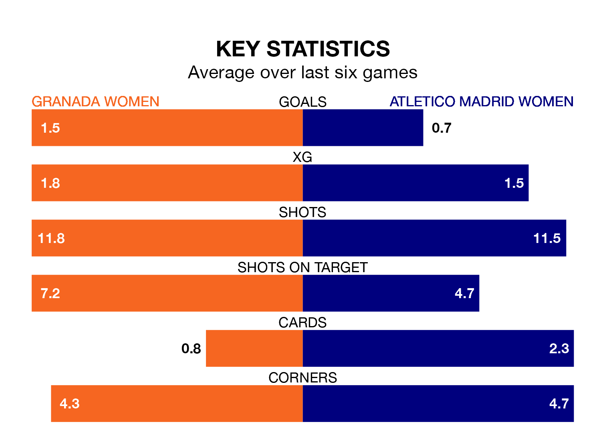

Struggling Granada Women face Atletico Madrid Women at Ciudad Deportiva del Granada CF on Sunday looking to build on a win in their last league outing.
After securing all three points with a 2-1 victory over Levante Las Planas on March 9, Granada sit 14th in Liga F.
They travel to play an Atletico Madrid side fifth in the standings, who also won their last match, 1-0 against Sporting de Huelva, on March 10.
With 19 goals in 19 games so far this season, Granada are scoring at below the league average rate with 1.0 goals per game. And they are conceding more than average, letting in 34 goals at a rate of 1.8 per game.
Atletico Madrid, meanwhile, are above average scorers, with 1.8 goals per game, compared to a league average of 1.6. They have conceded 0.8 goals per game.
In Sheila Guijarro Gómez, the away team have one of the league's most on-form strikers so far this season. She has notched 12 goals in 18 appearances, to sit third in the scoring charts.
Her goal rate of one every 123 minutes is much quicker than that of Laura Requena Sánchez, the hosts' top scorer with a goal every 401 minutes, and a total of four goals in 19 games.
Granada are in mixed form in Liga F, with two wins and three draws from their last six games.
With a win and three draws over that period, Atletico Madrid's form is worse – they have taken six points from 18, compared to Granada's nine.
Updated: 15:10 (UTC), 15/03/24